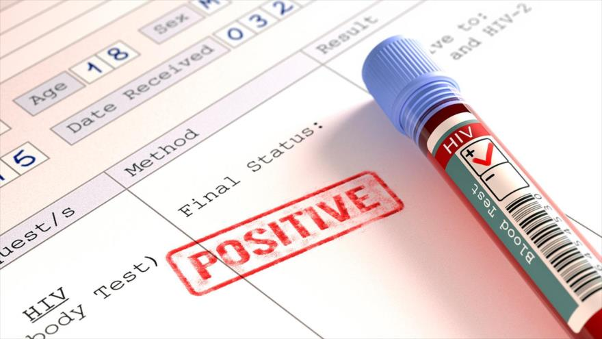

VIH y Derechos
En esta pagina se puede encontrar información sobre el VIH y su situacion respecto a las leyes y derechos

Según las estimaciones de ONUSIDA, hay casi 38 millones de personas que viven con VIH. De ellas, el 51% son mujeres. Gracias a los esfuerzos de la medicina, a través de los más de 35 años de esta pandemia, se ha logrado bajar la mortalidad, y cada vez que hay más gente que recibe su tratamiento: más de 24 millones de pacientes reciben terapia antirretroviral (ARV). Esto se traduce en un aumento significativo si se compara con los datos de la misma organización de hace nueve años, cuando aproximadamente 7 millones de personas accedían al tratamiento que les salvó la vida.
A partir de 1988 -año en el que nació el Día Mundial de la Lucha contra el Sida en la reunión mundial de la cumbre de Ministros de Salud sobre programas de prevención del sida-, las agencias de las Naciones Unidas, los gobiernos y la sociedad civil se reúnen cada año para luchar en determinadas áreas relacionadas con el sida. Desde entonces, se hicieron importantes progresos en la respuesta a esta epidemia mundial.

Leyes que protegen tus derechos si tenes VIH/SIDA en Argentina:
- Ley Nacional de Sida
- Ley de Derechos del Paciente
- Decreto Reglamentario 1089/2012
- Ley de creación del Programa Nacional de Salud Sexual y Procreación Responsable
- Ley de Obligatoriedad del Ofrecimiento de la Prueba del VIH a la mujer embarazada
- Ley Antidiscriminación
Ley Nacional de Sida
En el año 1990, se sancionó esta Ley Nacional, reglamentada bajo el Decreto Nº 1244/91.En su art 1º, la ley declara de interés nacional la lucha contra el Síndrome de Inmunodeficiencia Adquirida y tiene por finalidad impulsar la investigación y sus agentes causales, garantizar el diagnóstico y proveer tratamiento, promover la prevención de ella como de otras patologías derivadas, a través de la educación de la población. La norma otorga el derecho al acceso integral a la salud a todas las personas con VIH/sida.
El espíritu de la ley apunta a proteger los siguientes derechos:
Acceso a la atención de la salud. En concordancia con los principios de la Constitución Nacional de Igualdad y autonomía, declara de interés nacional la lucha contra el virus del VIH/Sida, promueve la investigación, la detección, el acceso al diagnóstico y tratamiento y la educación de todas las personas.
Respeto de la dignidad y no discriminación de la persona viviendo con VIH. Se establece que las normas existentes sean interpretadas, evitando que se afecte la dignidad de la persona, que provoque marginación, humillación, degradación y que respete la intimidad en cualquier ámbito.
Información, a través del consentimiento informado, entendiendo esto como el acceso de la persona a la información clara de su estado de salud, de las propuestas de tratamiento, de los riesgos que pueden producirse en caso de rechazo, haciendo que la toma de su decisión sea de manera consciente y con la información necesaria.
Confidencialidad, entendida como la protección de la información de las personas viviendo con VIH, exigiendo a los personas que manipulan dicha información estricta reserva de la misma, salvo excepciones, autorización del paciente u orden judicial.
Prevención. El Estado, en todos sus ámbitos, ya sea Nacional, Provincial o Municipal, deberá llevar adelante las tareas de educación de la población que exige la ley, con el fin de prevenir la transmisión del VIH.
El uso responsable del preservativo y las políticas comunicativas basadas en la información, son el eje fundamental de la tarea preventiva.
Ley de Derechos del Paciente
Esta ley establece los derechos que poseen los pacientes durante la relación con profesionales y/o instituciones de la salud. Fue sancionada en el año 2009 y su espíritu es la protección integral de la salud desde el enfoque de Derechos Humanos. Reconoce a todas las personas, los derechos de asistencia, el trato digno, la intimidad, la confidencialidad, la autonomía de la voluntad, y la información sanitaria que las personas deben tener a la hora de llevar adelante un tratamiento.
Amplía el concepto de Consentimiento Informado exigiéndolo en todas las relaciones anteriormente descriptas y explica las formas de otorgarlo, el momento de su aplicación, y su revocabilidad. Otro punto importante de la norma, es la definición de la Historia Clínica, y otorga el derecho al paciente de exigirla al profesional cuando la persona lo requiera. También describe cómo se confecciona y quienes además de su titular pueden solicitarla
Ley de creación del Programa Nacional de Salud Sexual y Procreación Responsable
Esta ley fue sancionada en el año 2003 y tiene como objetivo alcanzar el nivel más elevado de salud sexual, con el fin de que la persona pueda adoptar decisiones libres de discriminación, coacciones o violencia; disminuir la morbimortalidad materno-infantil; prevenir embarazos no deseados; promover la salud sexual de los adolescentes; contribuir a la prevención y detección precoz de enfermedades de transmisión sexual, de vih/sida y patologías genital y mamarias; garantizar a toda la población el acceso a la información, orientación, métodos y prestaciones de servicios referidos a la salud sexual y procreación responsable y potenciar la participación femenina en la toma de decisiones relativas a su salud sexual y procreación responsable.
La ley que establece el Programa de Salud Sexual y Procreación Responsable tiene como objetivo alcanzar el nivel más elevado de salud sexual de las personas. Busca que la persona decida con libertad, fuera de cualquier tipo de discriminación, coacción o violencia. Incluye a todas las personas, sean niños, niñas y adolescentes, en miras a la satisfacción del interés superior del niño. Expresa la necesidad de promover la prevención y detección precoz de enfermedades de transmisión sexual, de VIH y Sida, y patologías genitales y mamarias.
Exige que la realización del test diagnóstico y tratamiento integral se incluya dentro de la cobertura del programa médico obligatorio (PMO), dentro del nomenclador de prácticas médicas y farmacológicas. Contempla también la capacitación y formación de agentes para la detección de conductas de riesgo y la promoción de actividades de información sobre métodos anticonceptivos, distribución, monitoreo y evaluación.
Ley de Obligatoriedad del Ofrecimiento de la Prueba del VIH a la mujer embarazada
Esta ley es muy importante dentro del sistema de normas que integran el paquete de leyes de acción contra el VIH y el sida, ya que ofrece la protección necesaria a aquellas personas por nacer, y se incluye dentro del enfoque de Derechos Humanos teniendo en cuenta la protección de los Derechos del Niño.
La ley establece la obligatoriedad del ofrecimiento del test diagnóstico del virus de inmunodeficiencia humana, a toda mujer embarazada. Todos los establecimientos destinados a la salud, públicos o privados, están obligados a cubrirlo.
Es importante destacar, que la obligación está en el "ofrecer la prueba de VIH", no en hacerla, mediando el consentimiento informado. Desde hace algunos años, también el protocolo establece el ofrecimiento de la prueba a las parejas de las embarazadas
Ley Antidiscriminación
Esta ley exige que se adopten medidas disciplinarias frente a quien arbitrariamente impida, obstruya, restrinja o de algún modo dañe el pleno ejercicio sobre bases igualitarias de los derechos y garantías fundamentales reconocidos en la Constitución Nacional. A través de las exigencias de esta ley, quien cometiere esta falta será obligado, a pedido del damnificado, a dejar sin efecto el acto discriminatorio o cesar en su realización y a reparar el daño moral y material ocasionados.